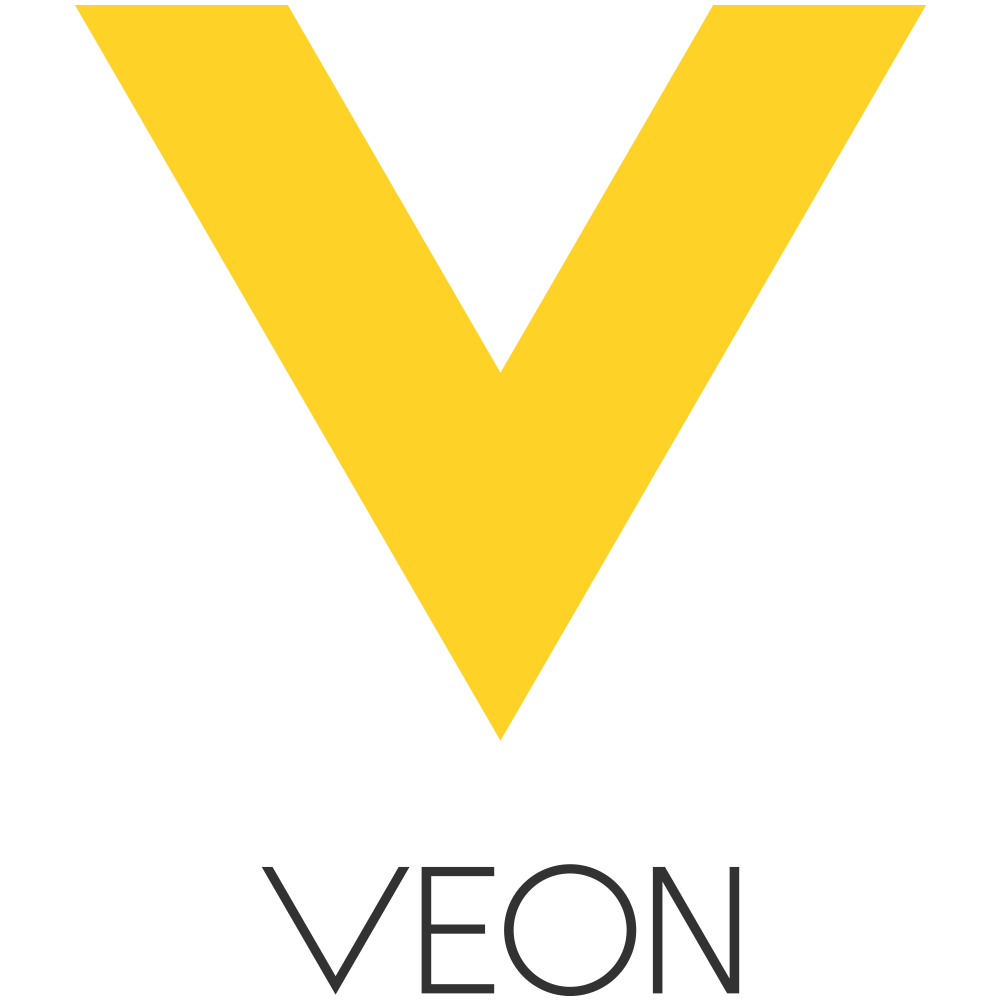

Brief History In Time
-

Veon
Backend Engineer
Amsterdam
Backend service development in a large scale micro-service architecture, member of Platform and Chat teams
Tech experience: Akka, Scala, Kafka, PostgreSQL, Redis, Cassandra, Docker, Sbt
-

Sony
Backend Engineer
İstanbul
Development and deployment of Global Sony Sites Platform and Product Publishing (sony.com, sony.co.uk .. sony.xx)
Tech experience: Scala, Akka, Play Framework, Camel, MongoDB, Elasticsearch, TDD, Devops, AWS, Sbt
-
ICTerra
Software Engineer
Ankara
* WorkIt (workit.biz)
Involving the the project from scratch, designed and developed Social Work Platform as a Service.
Tech experience: Java/Scala, Play Framework, Akka, Elasticsearch, Storm, RabbitMQ, Redis, MySQL, AngularJS, SBT
-

OpsGenie
Software Engineer
Ankara
• OpsGenie (opsgenie.com)
Back-end server development with Java and Groovy/Grails tech stack on AWS, integrating various monitoring technologies such as Nagios, CopperEgg, New Relic to the platform. -
METU
M.Sc. Grad - Computer Engineering
Ankara
Proud to be a grad of this amazing university which arguably the best technical university in Turkey. I had the opportunity to sharpen my technical skills and learn from world's best instructors, as well as my social skills organizing events, conferences and club activities.